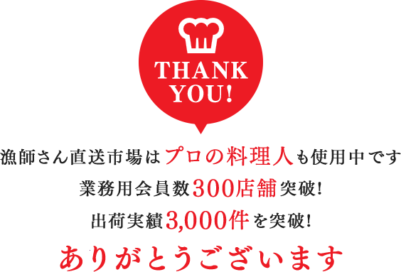

お支払い方法
日付指定注文の場合
【代金引換】【クレジットカード決済(visa,mastercardのみ対応)】がご選択可能です。
水揚次第出荷の場合
【代金引換】【クレジットカード決済(visa,mastercardのみ対応)】【銀行振込(前払い)】がご選択可能です。
一時的に、「初回のご注文での代引き決済」を制限させて頂いております
背景
・本サービスをスタートし、10年以上代引き決済を続けてきました。
・しかし最近(2025年2月)、代引き注文の受け取り拒否が増加し、生産者さんや弊社は損害を受けております。
・悲しいことに、送り先に対する迷惑行為のために別人が代引き注文するケースも発生し、警察に被害届が提出されるような場合もあります。
初回に代引き決済をご希望の場合、ご提案
・申し訳ありませんが、初回はクレジットカード決済など別の決済方法をご検討頂ければ幸いです。
・一度クレジットカード決済等でご注文頂き、実際に出荷できた場合には、次回からは代引き注文が可能です。
参考情報
・本サービスでは約2万名に会員登録していただいております。
・ご注文者様の約8割程度はクレジットカード決済となります。
・クレジット業界の国際的なデータセキュリティ基準「PCI DSS」に準拠した決済システムを利用しています。
・クレジットカード番号など、お客様の大切な情報は暗号化(SSL対応)して送信され、第三者から解読できないようになっております。
・不漁等で注文がキャンセルとなった場合、もちろんクレジットもキャンセルになりますのでご安心ください。
送料
表示金額が送料込みの金額となります。
ご注文方法
①漁師さん直送市場のホームページ上に並ぶ、「漁師さん紹介」「商品一覧(日付指定OK)」「商品一覧(水揚次第出荷)」等のタブの中から、購入したい商品を選択し、「注文する」をクリックします。
②「初めてご利用の方」「会員登録がお済の方」という画面になります。
「会員登録がお済の方」
漁師さん直送市場に登録してあるメールアドレスとパスワードを入力し、商品の発注画面に進みます。
「初めてご利用の方」
①ご使用になりたいメールアドレスを入力し、「会員登録(無料)」をクリックします。
②登録したメールアドレスにメールが届きますので、メールを開いて添付されているURLをクリックします。
③会員登録の画面になりますので、会員情報を入力します。
④会員登録が済み、商品の発注画面に進みます。
※商品に記載されている金額は、全て税込み・送料込みの金額となります。
※発注画面の「出荷希望日」は、漁師さんが漁に出て出荷する予定の日となります。
※発注画面の「出荷希望日」欄に、「直近、出荷可能な日程がありませんでした。後日ご注文頂くか、別の漁師さんをご検討ください。」と表示された場合は、その漁師さんが2週間以内に確実に漁に出る日が分からない状況となっています。
その漁師さんから購入したい場合は、再度「水揚次第出荷」の商品ページから漁師さんと商品を探して注文をお願いします。
他の漁師さんから購入する場合は、「日付指定OK」商品や、「商品一覧」ページの「漁師さん出荷予定」から商品を選択し、ご注文をお願いします。
※海が荒れるなど漁に出られず予定通り出荷ができない場合は、出荷予定日の午前を目途に、出荷キャンセルの連絡メールが登録メールアドレスに届きます。
ご注文の確認方法
注文が出来ているか確認する方法をご説明します。
①漁師さん直送市場のホームページ右上にある「会員様ページ（ログイン）」というタブをクリックします。
②登録アドレスとパスワードを入力し、ログインします。
③上に並ぶタブの中にある「注文履歴（日付指定）」か「注文履歴（水揚げ次第）」をクリックすると、注文を確認することができます。
ご注文後の出荷連絡
商品を発送できた場合、発送日の午前中をめどに登録メールアドレスに「発送連絡・発送された魚種名」のメールが届きます。
（多くの生産者さんは発送日の午前中をめどに発送連絡をされますが、海蓮丸さん、松栄丸さん、豊漁丸さん、不動丸さんは発送時間等の関係上、発送連絡が夕方～夜になることが多いです)
魚種名を見て、翌日や翌々日の到着日に向けてレシピを考えることができます。
漁師さん直送市場ホームページの上部にあるタブ「レシピや豆知識」もご活用ください。
ご注文のキャンセル方法
①上記の＜注文の確認方法＞と同じように会員様ページにログインし、「注文履歴(日付指定)」のページに行きます。
②まだ出荷されていない場合のみ「キャンセル」のタブが表示されておりますので、そちらをクリックしますと注文のキャンセルを行うことができます。
※「水揚次第」のご注文に関しては、タイミングによっては注文直後に漁師さんが出荷準備に入られている可能性がありますので、注文履歴に「キャンセル」ボタンは表示されません。
「水揚次第」注文をキャンセルする際は、下記の＜漁師さんへのメッセージを送る方法＞の手順でその漁師さんにメッセージを送り、キャンセルを直接お願いする形になります。
漁師さんへメッセージを送る方法
商品注文後から、漁師さんと直接メッセージのやり取りができます。
①上記の＜注文の確認方法＞と同じように会員様ページにログインします。
②画面に左側に、注文履歴のある生産者さんの名前が並んでおりますので、注文した生産者さんんを選択してクリックし、メッセージを入力して送信します。（注文履歴のない漁師さんにはメッセージを送ることができません。）
③生産者さんから返信があった場合は、登録メールアドレスに連絡メールが届きますので、会員様ページにログインしてご確認ください。
本人認証サービス（3Dセキュア2.0）について
原則すべてのECサイト事業者に対して、2025年3月末までに本人認証サービス（3Dセキュア2.0）を導入することが義務づけられました。
お客様にクレジットカードを安心・安全にご利用いただくため、本サービスにおいても本人認証サービス（3Dセキュア2.0）に対応予定となります。ご本人様確認のため、クレジットカード決済でのご注文時にカード会社が発行するワンタイムパスワードなどの入力が必要な場合があります。
カード会社にて本人確認が不要と判断された場合は、パスワードの入力画面が表示されないことがあります。安心安全な取引のために、今後も様々な取り組みを行ってまいります。今後ともどうぞよろしくお願いします。



今なら登録特典として
「季節のおすすめ魚介類 無料レポート」プレゼント中！